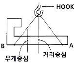

천장크레인운전기능사 (2006-10-01 기출문제)
1과목: 임의 구분
1. 두 축이 서로 교차할 때 사용되는 기어는?
- 평기어
- 베벨기어
- 펠리컬 기어
- 웜 기어
(정답률: 77%)

2. 천장크레인의 전동기는 그 사용 빈도에 따라 사용률 정격(%ED)으로 표시한다. 맞는 것은?
- (정지시간 / 운전시간) × 100
- (운전시간 / 정지시간) × 100
- (운전시간 / (운전시간＋정지시간)) × 100
- (정지시간 / (운전시간＋정지시간)) × 100
(정답률: 64%)
3. 국내에서 천장크레인의 공칭 용량 단위는?
- 톤
- 파운드
- 미터
- 1000파운드 단위
(정답률: 84%)
4. 드럼 홈의 지름은 와이어 로프의 공칭지름보다 몇 % 크게 하는 것이 좋은가?
- 10
- 20
- 30
- 40
(정답률: 알수없음)
5. 정격하중에 상당하는 부하물을 달았을 때 제동용 브레이크에서의 제동력은 토크 최대값의 몇 배 이상이어야 하는가?
- 1
- 1.5
- 2
- 3
(정답률: 80%)
6. 제한 개폐기(Limit Switch)의 종류가 아닌 것은?
- 너트(Nut)형 제한 개폐기
- 레버(Lever)형 제한 개폐기
- 로드(Rod)형 제한 개폐기
- 캠(Cam)형 제한 개폐기
(정답률: 30%)
7. 리모콘 크레인의 취급에 대한 설명 중 틀린 것은?
- 제어기는 다른 크레인용과 혼동되지 않도록 이름판을 부착하고 각 크레인 별로 구분하여 둔다.
- 운전위치와 크레인의 기계 장치가 떨어져 있는 경우는 육안에 의한 점검은 생략할 수 있다.
- 운전 중에 권상 화물이 보이지 않는 위치에 이동한 경우는 일단 정지한 후 권상 화물이 보이는 장소로 이동한 후 운전을 재개한다.
- 작업 개시 전 비상정지 버튼을 눌러 전원이 끊어지는가를 확인한다.
(정답률: 92%)
8. 주행차륜의 축간거리와 스팬과의 관계에서 천장크레인이 사행하지 않으려면 다음 중 맞는 것은?
- (스팬/축간거리) ≤ 30
- (스팬/축간거리) ≤ 50
- (스팬/축간거리) ≤ 8
- (스팬/축간거리) ≤ 12
(정답률: 64%)
9. 거더의 중앙부에 정격하중을 매달았을 경우 허용굽힘량은 스팬의 얼마를 초과하지 않아야 하는가?
- 1/500
- 1/800
- 1/1200
- 1/1500
(정답률: 82%)
10. 전기제동 장치의 종류가 아닌 것은?
- 오일 디스크 브레이크
- 스러스트 브레이크
- 마그네트 브레이크
- 다이나믹 브레이크
(정답률: 58%)
11. 다음 중 천장크레인 권상 장치의 주요 구성요소가 아닌 것은?
- 전동기
- 감속기
- 브레이크
- 캠버
(정답률: 79%)
12. 전동기 회로의 보호장치가 아닌 것은?
- 퓨즈
- 차단기
- 과전류 릴레이
- 변압기
(정답률: 77%)
13. 일정시간을 두고 다음 동작으로 이행할 때에 사용하는 것은?
- 무전압 보호장치
- 타임 릴레이
- 역상보호 계전기
- 전자 접촉기
(정답률: 83%)
14. 급유 관계에 대한 설명으로 맞는 것은?
- 주행차륜의 답면 및 레일 표면에는 마모를 적게 하기 위하여 오일을 자주 발라둔다.
- 브레이크 라이닝은 마모가 심하므로 그 방지책으로 가끔 오일을 발라둔다.
- 로프의 수명을 좌우하는 마모나 부식 등을 방지하기 위하여 항상 그리이스를 발라둘 필요는 없다.
- 오일급유등은 크레인 운전자와는 관계없다.
(정답률: 69%)
15. 디스크 브레이크 페달을 밟아서 압력은 있는데도 제동이 잘 안 되는 이유와 거리가 먼 것은?
- 디스크 브레이크 오일에 공기가 침투된 상태
- 디스크 브레이크 라이닝에 물이 묻어있는 상태
- 디스크 브레이크 파이프가 파손 되었을 때
- 디스크 브레이크 라이닝에 기름이 묻어있는 상태
(정답률: 53%)
16. 크레인에서 디스크 브레이크의 공기빼기 작업 중 옳지 않은 것은?
- 브레이크의 모든 유압계통을 확인한다.
- 마스터실린더에서 브레이크 오일을 보급하면서 행한다.
- 브레이크 파이프를 빼면서 행한다.
- 일반적으로 마스터 실린더에서 제일 먼 곳의 휠 실린더에서 행한다.
(정답률: 30%)
17. 키(key)에 대한 설명 중 틀린 것은?
- 구배키(taper key)는 1/100의 기울기를 준 것이다.
- 키에는 수시로 급유하여 녹을 방지해야 한다.
- 키는 회전력을 전달하는데 사용된다.
- 키는 회전체를 축에 고정시키는데 사용된다.
(정답률: 38%)
18. 축 저널의 손상 원인에 대한 설명으로 맞지 않는 것은?
- 제작상의 불량
- 강성 부족
- 과다한 오일 공급
- 장치 불량
(정답률: 80%)
19. 전동기를 접지하는 목적으로 가장 적합한 것은?
- 감전을 방지하기 위해
- 전동기의 과열을 방지하기 위해
- 누전을 방지하기 위해
- 전동기에 전기를 공급하기 위해
(정답률: 62%)
20. 거더와 새들을 점검하는 방법이 아닌 것은?
- 부재의 균열 유무 확인
- 구조물의 용접부에 균열 또는 결함의 발생 유무 확인
- 취부 볼트의 풀림, 부식 등은 없는지 확인
- 윤활유는 적당한가 확인
(정답률: 67%)
2과목: 임의 구분
21. 운전 중 컨트롤러(controller) 베어링에 기름이 마르거나, 레버(lever) 조정이 불량하였을 때 나타나는 현상으로 가장 적합한 것은?
- 스파크가 일어난다.
- 핸들(레버)이 무겁다.
- 작동이 안 된다.
- 정지한다.
(정답률: 74%)
22. 일반적으로 천장크레인에 사용하는 베어링의 자체 내열 온도로 맞는 것은?
- 100℃
- 600℃
- 1200℃
- 2500℃
(정답률: 85%)
23. 천장크레인에 대한 설명으로 틀린 것은?
- 천장크레인의 보수에 있어서 권상장치는 예방 보전으로 관리한다.
- 주행장치의 주행 차륜은 년간점검으로 관리한다.
- 점검은 일상점검, 주간점검, 월간점검, 년간점검으로 구분한다.
- 천장크레인은 예방 보전하는 것이 좋다.
(정답률: 66%)
24. 기어에 급유하는 목적이 아닌 것은?
- 기어의 잇면에 유막형성
- 소음방지
- 냉각작용
- 미끄럼 방지
(정답률: 84%)
25. 운전 전 배전반의 점검 중 가장 옳은 것은?
- 전원 신호등의 점등을 확인한다.
- 제어기를 운전하여 본다.
- 그랩의 움직임을 확인한다.
- 주행, 횡행 시의 요동 또는 속도를 확인한다.
(정답률: 70%)
26. 차륜의 점검사항으로 가장 거리가 먼 것은?
- 베어링의 마모 상태
- 레일의 굽음
- 차륜의 중심선 일치 여부
- 차륜의 열전도율
(정답률: 50%)
27. 미터 보통나사의 나사산의 각도는?
- 60°
- 55°
- 50°
- 30°
(정답률: 64%)
28. 전자석 브레이크의 충격에 대한 원인과 관계가 없는 것은?
- 전압이 너무 큰 경우
- 핀 둘레가 마모된 경우
- 대시포트의 조정불량인 경우
- 잔류 자기가 있는 경우
(정답률: 50%)
29. 그림과 같이 물건을 들어 올리려고 했을 때 권상을 한 후에는 어떤 현상이 일어나는가?

- 수평상태가 유지된다.
- A쪽이 밑으로 기울어진다.
- B쪽이 밑으로 기울어진다.
- 무게중심과 훅 중심이 수직으로 만난다.
(정답률: 90%)
30. 와이어 로프의 안전계수가 5이고, 절단하중이 20000kgf일 때 안전하중은?
- 6000kgf
- 5000kgf
- 4000kgf
- 2000kgf
(정답률: 85%)
31. 와이어 로프 끝의 단말고정법 중 효율을 100% 유지할 수 있으며, 줄걸이 용에는 거의 사용하지 않는 방법은?
- 쐐기 고정
- 클립 고정
- 합금 고정
- 아이스프라이스
(정답률: 75%)
32. 와이어 로프 랭꼬임에 대한 설명으로 틀린 것은?
- 보통 꼬임보다 손상도가 적다.
- 보통 꼬임에 비하여 킹크를 잘 일으키지 않는다.
- 로프의 꼬임 방향과 스트랜드의 꼬임 방향이 같다.
- 보통 꼬임보다 사용 수명이 같다.
(정답률: 39%)
33. 와이어 로프에 관한 설명으로 틀린 것은?
- 부식은 표면 침식이 적은 것 같아도 내부 깊숙이 진행될 수 있다.
- 아연도금한 것은 절대 사용하지 않는다.
- 꼬임은 S형, Z형이 있다.
- 와이어 로프에 도금한 것을 사용할 수도 있다.
(정답률: 38%)
34. 와이어 로프의 절단 하중을 100%로 하였을 때 비틀려 꺾임(Kink)와이어 로프는 절단 하중의 몇 % 감소하는가?
- 20%
- 30%
- 40%
- 50%
(정답률: 8%)
35. 2000kgf의 짐을 두줄걸이로 하여 줄걸이 로프의 각도를 60도로 매달았을 때 한쪽 줄에 걸리는 하중은 약 몇 kgf인가?
- 2310
- 2000
- 1155
- 578
(정답률: 79%)
36. 크레인용 와이어 로프로 사용 가능한 것은?
- 이음매가 있는 것
- 와이어로프의 한 가닥에서 소선수의 10% 이상 절단된 것
- 지름의 감소가 공칭지름의 5% 이하인 것
- 심하게 변형 또는 부식된 것
(정답률: 77%)
37. 제조 시 와이어 로프 직경의 허용오차는 얼마인가?
- ± 7%
- 0% ~ ＋7%
- ± 3%
- -3% ~ ＋5%
(정답률: 58%)
38. 와이어 로프를 선정할 때 주의해야 할 사항이 아닌 것은?
- 용도에 따라 손상이 적게 생기는 것을 선정한다.
- 하중의 중량이 고려된 강도를 갖는 로프를 선정한다.
- 심강(core)은 사용 용도에 따라 결정한다.
- 높은 온도에서 사용할 경우 반드시 도금한 로프를 선정한다.
(정답률: 78%)
39. 팔꿈치에 손바닥을 붙였다 떼었다 하는 동작은 무슨 신호인가?
- 운전자 호출
- 주권 사용
- 보권 사용
- 기다려라
(정답률: 82%)
40. 신호수의 준수 사항이 아닌 것은?
- 신호수는 운전자에게 정확한 신호로 전달한다.
- 신호수는 규정된 신호요령에 의거 신호한다.
- 부득이 대형 화물을 권상할 때는 2명의 신호수를 배치한다.
- 짐 밑에 들어가거나, 짐 위에 타는 사람이 없도록 한다.
(정답률: 79%)
3과목: 임의 구분
41. 크레인에서 전기 스파크가 일어났을 때 어떤 조치를 제일 먼저 취해야 하는가?
- 퓨즈를 끊는다.
- 메인 스위치를 OFF로 한다.
- 레버를 급속히 정지 위치로 한다.
- 전동기 스위치를 끈다.
(정답률: 74%)
42. 신호법 중에서 팔을 아래로 뻗고 집게손가락을 아래로 향해서 수평원을 그리는 신호는 무슨 신호인가?
- 운전 방향 지시
- 아래로 내리기
- 천천히 이동
- 천천히 조금씩 올리기
(정답률: 79%)
43. 크레인 운전 조작의 주의사항에 관한 설명으로 틀린 것은?
- 화물이 지면에서 떨어지는 순간의 권상은 빠른 속도로 권상한다.
- 줄걸이 작업 위치까지 훅을 권하 시킬 때에는 필요 이상으로 권하 시키지 않는다.
- 화물의 중심위에 훅의 중심이 오도록 횡행, 주행 조작 등에 의해 위치를 결정한다.
- 화물위치에 크레인을 이동시킬 경우 훅을 지상의 설비 등에 부딪치지 않을 높이까지 권상하여 크레인을 수평 이동시킨다.
(정답률: 83%)
44. 크레인 운전 중 안전 운전을 위하여 가장 중요한 것은?
- 운전실내의 정리정돈 상태
- 주행노상에 장해물 대처 방법
- 운전자와 신호수와의 신호
- 권상 상한 거리
(정답률: 50%)
45. 천장크레인으로 물건을 운반할 때 주의 사항으로 틀린 것은?
- 규정 무게 15%까지는 초과할 수 있다.
- 적재물이 떨어지지 않도록 한다.
- 로프 등의 안전 여부를 항상 점검한다.
- 운반 중 사람이 다치지 않도록 한다.
(정답률: 94%)
46. 주행, 횡행의 동시 작동 중 크래브를 급정지할 경우의 영향으로 옳지 않는 것은?
- 로프에 영향을 준다.
- 크래브 자체에 영향을 준다.
- 주행 레일에 영향을 준다.
- 횡행 차륜에는 영향을 미치나, 주행차륜에는 영향이 없다.
(정답률: 72%)
47. 천장크레인의 크기 표시 60/20×42m에서 60/20은?
- 주권 60톤, 보권 20톤
- 보권 60톤, 주권 20톤
- Span 60m, 양정 20m
- 양정 60m, Span 20m
(정답률: 59%)
48. 천장크레인의 작업능력을 표시하는 방법은?
- 권상 톤수
- 권상 체적
- 작업 시간
- 작업 속도
(정답률: 74%)
49. 정격하중이 20톤인 천장크레인의 완성검사 시 시험하중은 얼마인가?
- 29톤
- 22톤
- 25톤
- 30톤
(정답률: 67%)
50. 운전 종료 후의 조치 사항으로 틀린 것은?
- 각 제어기를 off하고, 전원 s/w를 off한다.
- 각부의 청소를 한다.
- 운전종료 지점에 크레인을 정지시키고 S/W를 off한다.
- 각 부의 이상 유무를 점검한다.
(정답률: 59%)
51. 드릴(drill)기기를 사용하여 작업할 때 착용을 금지하는 것은?
- 안전화
- 장갑
- 모자
- 작업복
(정답률: 59%)
52. 기계시설의 안전 유의 사항으로 적절치 않는 것은?
- 회전부분(기어, 벨트, 체인) 등은 위험하므로 반드시 커버를 씌워둔다.
- 발전기, 아크 용접기, 엔진 등 소음이 나는 기계는 한 곳에 모아서 배치한다.
- 작업장의 통로는 근로자가 안전하게 다닐 수 있도록 정리 정돈을 한다.
- 작업장 바닥은 보행에 지장을 주지 않도록 청결하게 유지 한다.
(정답률: 100%)
53. 일반 수공구 취급 시 주의할 사항이 아닌 것은?
- 작업에 알맞은 공구를 사용할 것
- 공구를 청결한 상태에서 보관할 것
- 공구는 지정된 장소에 보관할 것
- 공구가 맞는 것이 없으면 비슷한 용도의 공구를 사용할 것
(정답률: 75%)
54. 목재, 종이, 석탄 등 일반 가연물의 화재는 어떤 화재로 분류 하는가?
- A급 화재
- B급 화재
- C급 화재
- D급 화재
(정답률: 알수없음)
55. 토크랜치의 사용법으로 올바른 것은?
- 핸들을 잡고 밀면서 사용한다.
- 토크 증대를 위해 손잡이에 파이프를 끼워서 사용하는 것이 좋다.
- 게이지에 관계없이 볼트 및 너트를 조이면 된다.
- 볼트나 너트 조임력을 규정값에 정확히 맞도록 하기 위해 사용한다.
(정답률: 80%)
56. 작업장에 준비해야 할 것으로 안전과 관계가 먼 것은?
- 응급용 의약품
- 철제 쓰레기통
- 소화기 및 소화용구
- 휘발성 연료 구비
(정답률: 87%)
57. 물품을 운반할 때 주의 할 사항으로 틀린 것은?
- 가벼운 화물은 규정보다 많이 적재하여도 된다.
- 긴 물건을 쌓을 때는 상자에 넣고 쌓는다.
- 정밀한 물품을 쌓을 때는 상자에 넣도록 한다.
- 약하고 가벼운 것을 위에 무거운 것을 밑에 쌓는다.
(정답률: 70%)
58. 안전적 측면에서 인화점이 낮은 연료의 내용으로 맞는 것은?
- 화재발생 위험이 있다.
- 연소상태의 불량 원인이 된다.
- 압력 저하 요인이 발생한다.
- 화재발생 부분에서 안전하다.
(정답률: 42%)
59. 복스렌치가 오픈엔드렌치보다 더 많이 사용되는 이유는?
- 값이 싸다.
- 여러 가지의 크기의 볼트, 너트에 사용할 수 있다.
- 사용하기가 복잡하기 때문이다.
- 볼트, 너트 주위를 완전히 싸게 되어 있어 사용 중에 미끄러지지 않는다.
(정답률: 82%)
60. 안전장치에 관한 설명으로 틀린 것은?
- 안전장치는 반드시 활용하도록 한다.
- 안전장치는 작업 형편상 부득이한 경우는 일시 제거해도 좋다.
- 안전장치가 불량할 때는 즉시 수정한 다음 작업한다.
- 안전장치 점검은 작업 전에 하도록 한다.
(정답률: 85%)